▶ Video del recorrido
El recorrido principal de la fase, como lo haría un almacenero.
“Mi stock” ya funciona: tarjetas con lo que falta y lo que sobra, la lista de productos con buscador, la ficha de cada producto, descontar pérdidas con motivo y el conteo rápido. El stock nunca se edita a mano: todo queda como movimiento.
El recorrido principal de la fase, como lo haría un almacenero.
Tarjetas simples en vez de tablas: lo que te falta (en rojo), lo que no se vende hace un mes, con qué productos ganas poco y cuánto vale tu mercadería. Cada tarjeta tiene “Ver cuáles”.
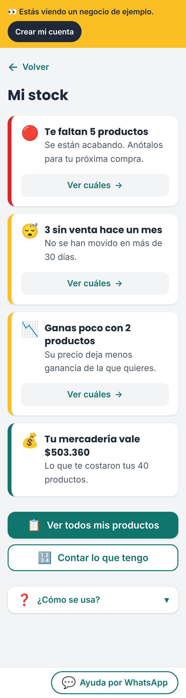
Al tocar “Ver cuáles” aparecen solo los productos bajo el mínimo, con lo que queda en rojo.
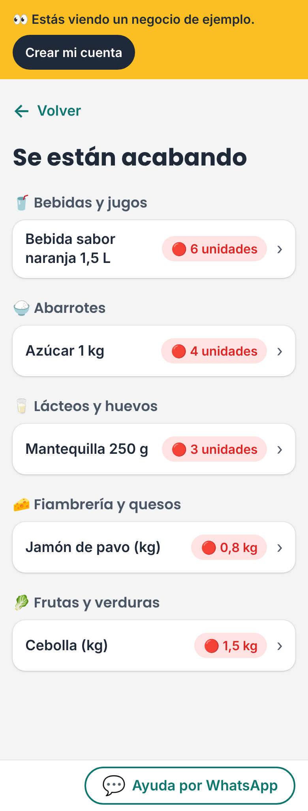
Todos los productos ordenados por categoría, con lo que queda de cada uno. Arriba hay un buscador.
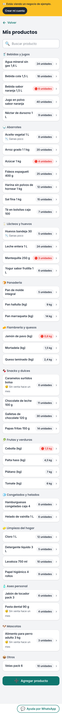
Escribe una parte del nombre (no importan las tildes) o el código de barras.
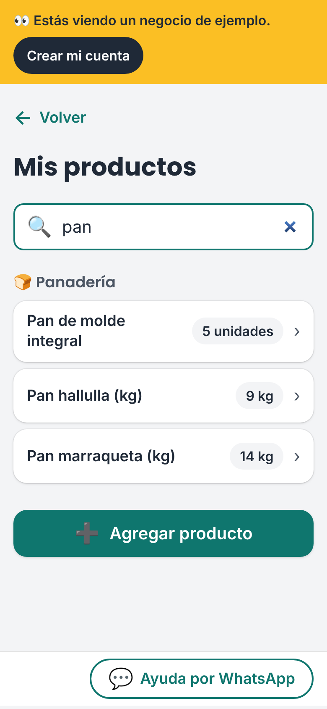
Cuánto queda (grande), el precio, el costo, cuánto ganas y lo último que pasó: ventas, mermas y el stock con que partió.
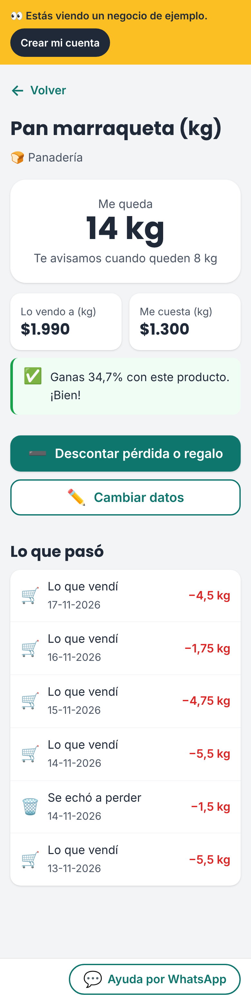
Si el precio deja menos ganancia que el objetivo de su categoría, la ficha lo dice con palabras simples. (En la Fase 4 sumamos el precio sugerido.)
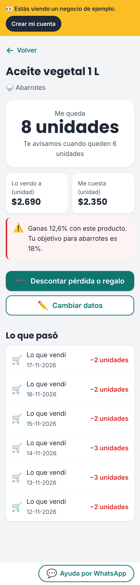
Cuatro botones grandes con el motivo (se echó a perder, se venció, lo usé yo, lo regalé) y cuánto. Para el pan se puede usar coma: 1,5.
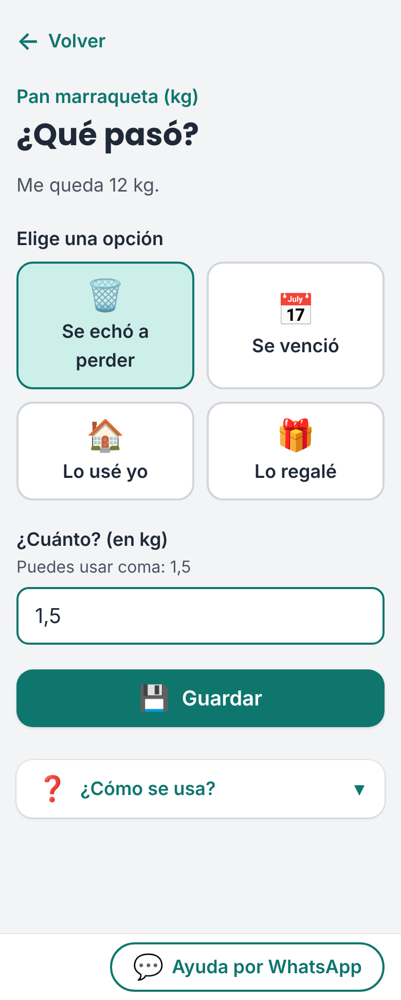
Confirmación visible y el stock ya actualizado. La pérdida queda anotada en “Lo que pasó”.
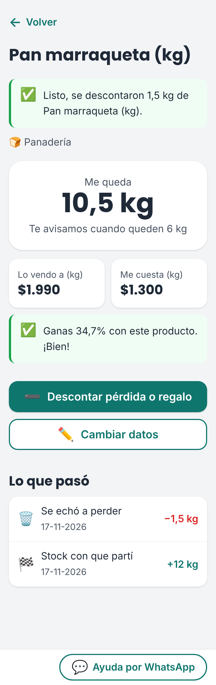
Si alguien prueba en el Almacén Don Pepe, puede recorrer todo, pero al guardar ve este aviso. Así el demo nunca se desordena.
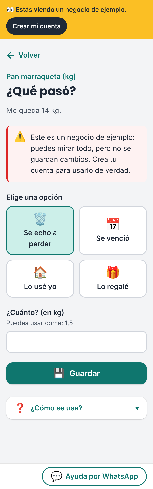
Nombre, categoría y cómo se vende (por unidad, kilo, litro o caja). Normalmente los productos se sumarán solos con la foto de la boleta (Fase 3).
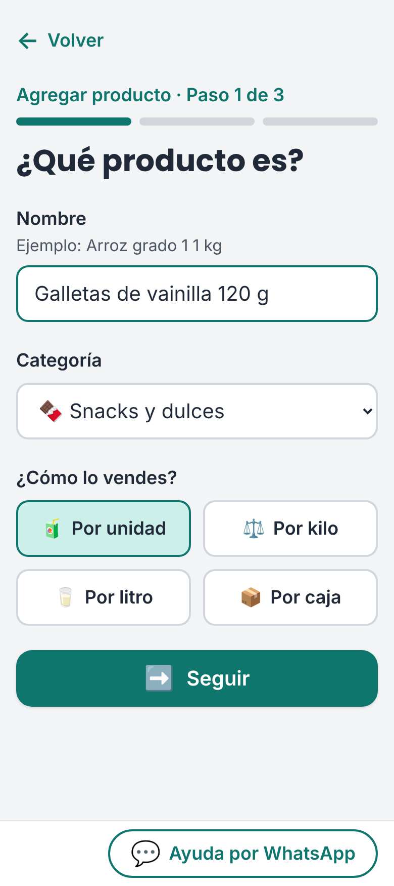
A cuánto lo vendes, cuánto te costó y el código de barras (si tiene).
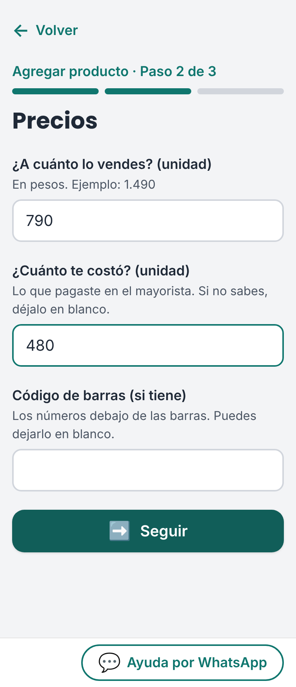
Cuántos tienes ahora (queda como primer movimiento) y cuándo quieres que te avisemos que se está acabando.
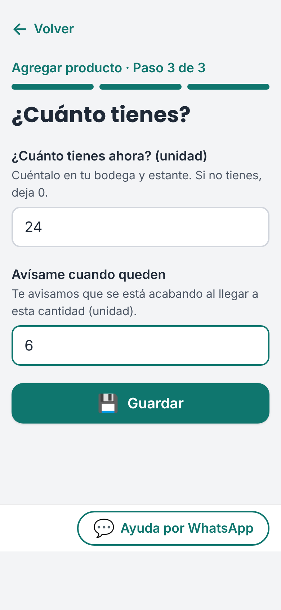
El producto queda con su stock inicial, su precio y cuánto ganas.
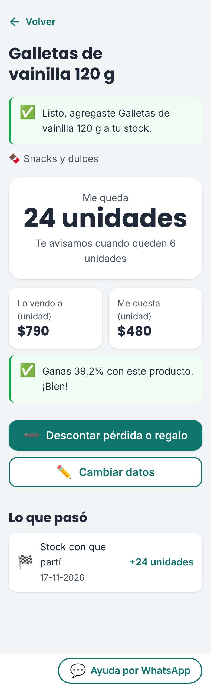
Para lo que no pasa por la caja (pan, verduras, mermas): eliges una categoría y cuentas.
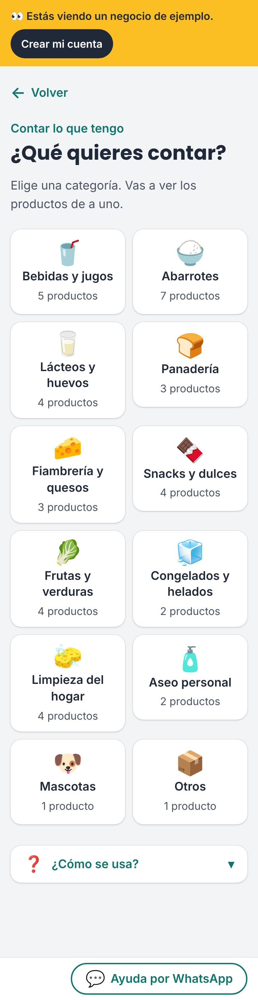
Escribes cuántos hay de verdad. Si hay lo mismo que dice la app, basta con tocar “Hay lo mismo”.
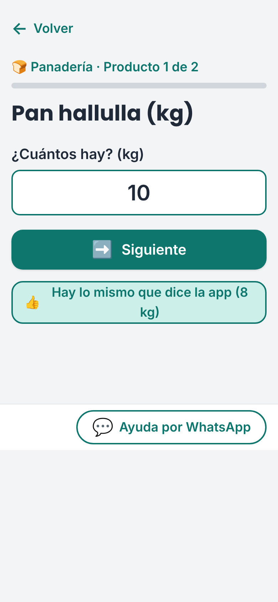
La app muestra solo lo que no cuadra, para que lo revises antes de guardar. Nunca se cambia el stock sin dejarlo anotado.
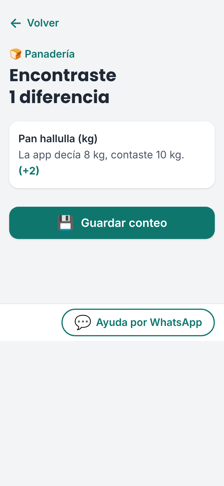
Vuelve a “Mi stock” con la confirmación de cuántos productos se corrigieron.
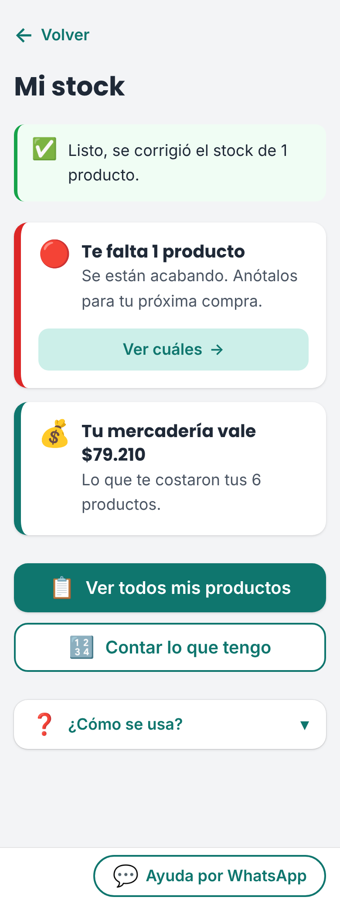
Nada se borra sin preguntar. El historial del producto queda guardado.
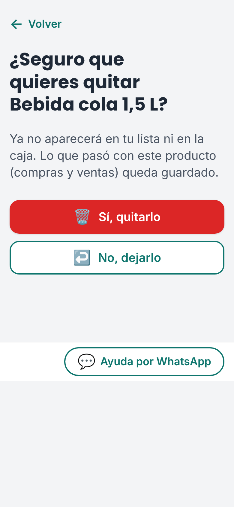
Un negocio recién creado ve esta pantalla vacía con un solo camino: agregar su primer producto (o subir su primera boleta, en la Fase 3).
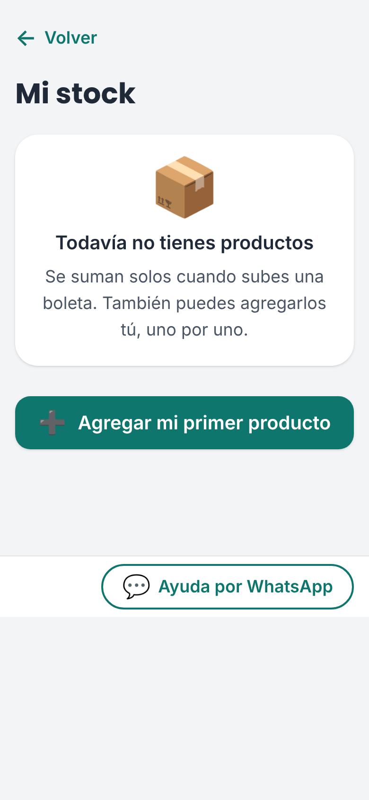